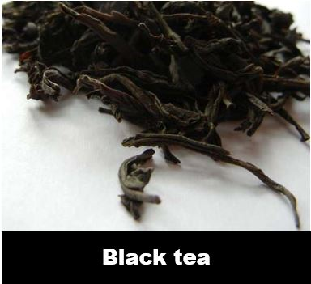
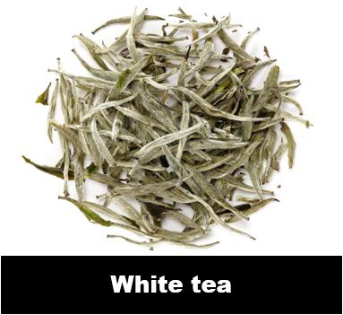
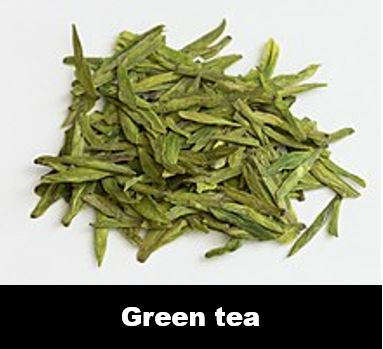
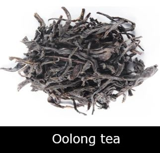

Types of tea
| Type of tea | Description | Prominent feature | Health benefits | Cost |
|---|---|---|---|---|
|  | Black tea, the most common type of tea from Sri Lanka, India, Kenya and other former British colonies, is completely fermented. To minimize moisture and make the leaf pliable, black tea is picked, withered, then rolled, fermented and dried before sifting. |
Normally made as strips or granular shapes, black tea is renowned for its red color brew. For the making of black tea, broad leaf species and medium leaf species are ideally suited. It allows the fresh tea leaves to be in the same state to form both shapes. The leaves used must be tender, dense and coated with enough pekoe so it can stay fresh for a long time. |
|
$ 4.09/KG |
|  | For the discerning tea drinker, white tea, known in Sri Lanka as Silver Tips, is among the most rare and refined of teas. While much of the "White Tea" branded tea around the world is simply a combination of a nominal amount of white tea and green or black teas, real white tea retains a particular appearance with a silvery leaf, with a velvety texture and, when brewed, produces a vivid, golden liquor. | White tea, known as Pekoe, is made using only the latest tea leaves or unopened buds from the tea bush. Before they open, the young leaves and leaf buds are picked by hand. The fine white hairs that are present only on the surface of the leaves characterize these tea leaves. Only within the first few days of the first tea flush each year are white tea leaves harvested. |
|
$272.70/KG |
|  | Green tea started its growth from China, now also grown in Japan, Vietnam, Taiwan and increasingly in India and Sri Lanka, is unfermented, retaining usually moderate, light and often astringent properties. | Green tea has several shapes due to its fresh leaves an processing methods:Flat shape green tea (As seen in the picture),Sheet shape green tea,Strip type green tea,Needle-like,Orchid shape,Birds tongue, etc… |
|
$13.63/KG |
|  | Oolong teas are partially oxidized or fermented, ranging from light "Springtime Oolong Teas" that have a gentle, floral and mild sweetness to heavier dark Oolongs that are woody, often earthy with heavy fruit and sometimes caramelised notes. | Traditionally, Oolong teas are rolled, twisted or curled into tight balls or thin strands. Such artisanal methods of shaping depend on the tea master's tea making traditions. Rolling is an essential feature of the processing of oolong that alters the final tea leaves' shape, color and aroma. |
|
$74.99/KG | Information on types of Tea |